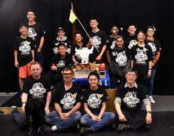
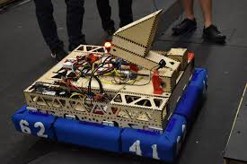

1 / 18
Everything I'm shipping today — AI for the construction field, full-time PE work on the $2B LACC, an open research loop with the people who live inside this industry — sits on top of everything that came before it. Wooden robots, race-car suspension, a camera. Listed in the order that matters most right now.
OpenYap is what happens when a working construction PE gets their hands on every current LLM and asks: what would actually unload this week's calendar? 15+ specialized agents — submittal coordinator, RFI triager, schedule analyst, drawing indexer, takeoff specialist, voice assistant — across Discord, Teams, and a web UI. Not a demo. Running live on a $2B LACC project.
Every tool I ship has to survive a 6 AM tailgate meeting. If a foreman can't use it with a hard hat on, it's not done. That constraint is the entire product.
The thesis: the next decade of this industry belongs to the people who bring AI to the job-trailer. Every side project I've ever built was practice for this one.
Full-time PE at Webcor Builders on the LACC Convention Center Upgrade Program — a $2 billion modernization of the Los Angeles Convention Center. I run concrete operations across four sections: foundation pours, embed tracking, inspection coordination, takeoff, and QC.
Every tool on this site — every agent, dashboard, voice command, poster — gets tested under real concrete pressure first. If it survives a Monday at Section A, it's ready to ship somewhere else.
This is where software becomes gospel. On a job site, there are no roll-back deploys. You can't ship a fix when the pour has started.
Before OpenYap scales past my own project, I've been interviewing construction professionals across the industry — foremen, PEs, supers, estimators, trade partners, C-suite at other GCs — to map where the real friction lives. Not what a glossy PMIS demo says is broken. What actually eats their Tuesday.
Every interview sharpens the product. Every quote gets anonymized unless a partner opts in. The recordings + transcripts live in a private library I keep tidy.
Across every role in every GC interviewed, submittal back-and-forth (spec review → formatting → sub approval → GC approval → A/E approval) is the #1 time-sink. Anywhere from 6 to 40 hours per submittal, with most of that in coordination, not content.
Foremen and PEs spend 30–60 min/day searching for one specific detail across hundreds of sheets. "The detail's in there somewhere" is an industry tax. An indexed, searchable drawing set changes the workday.
What a PM knows at 4 PM rarely reaches the foreman by 6 AM. RFIs close in the office; the field finds out when rework shows up. Closing that loop — with AI drafting, voice interfaces, mobile-first checklists — is where OpenYap earns its keep.
A camera is a constraint device — you can only include what the frame allows. The discipline of composing a frame transferred directly to designing interfaces. Selected recent work; full portfolio on Adobe.
At Cal Poly Pomona I joined the Formula SAE Electric team — a student-run program building a fully electric open-wheel race car from scratch. I led suspension: a-arm geometry, uprights, shock mounting, hub bearings, camber/caster setup, corner compliance testing.
This was CPP's first electronic race car, which meant no prior-year chassis to steal from. We had to design for an unusual weight balance — battery pack dominating mass — and translate that into geometry that wouldn't wash out under cornering. Endless FEA iterations, CAD reviews, bolt-torque specs, tire data studies.
Shipping a race car is very similar to shipping software, minus the part where bugs have you walking home from Michigan. It taught me to design for the weakest-part-first and treat every tolerance as sacred until proven otherwise.
In high school I joined CowTech FRC — a small-town FIRST Robotics team with almost no budget. While other teams showed up to regionals with aluminum chassis and CNC'd parts, we built our competition robot mostly out of wood. Hand-cut plywood frame, bolt-together joints, zip ties holding pneumatics in place.
It shouldn't have worked. It absolutely did. I learned more about constraint-driven design from that wooden robot than from any textbook — when you can't afford to brute-force a solution, you get very good at iterating, and very good at not being precious about your ideas.
That same constraint muscle is what I use now every time a foreman tells me a feature doesn't work at 6 AM with one thumb and a hard hat. The fix is never more stuff. It's always less.


Every side project was practice for the big one. Want to add the next chapter together?